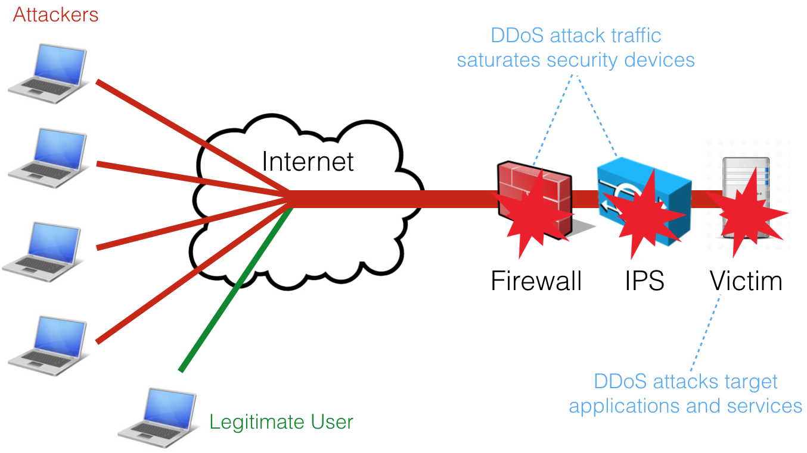

nScrub Документация
nScrub — это система защиты от DDoS-атак, основанная на PF_RING ZC, способная работать на скорости линии 10 Гигабит/с с использованием низкопроизводительной системы и масштабироваться до Терабит/с, создавая модульную архитектуру.
DDoS-атака (распределенный отказ в обслуживании) — это попытка сделать службу недоступной путем перегрузки ее вредоносным трафиком из нескольких распределенных источников.
Обычные маршрутизаторы, межсетевые экраны и IPS не предназначены для обработки большого объема пакетов в секунду и часто становятся первой жертвой атак типа «отказ в обслуживании». Для защиты инфраструктуры необходимы специализированные решения, решения, которые могут не только маршрутизировать или коммутировать пакеты с высокой скоростью, но также фильтровать и анализировать вредоносный трафик.

Подобные специализированные решения в прошлом реализовывались с помощью специального оборудования со специально разработанными ASIC или FPGA, способными выполнять высокоскоростную фильтрацию.
nScrub — это программный инструмент предотвращения DDoS-атак, основанный на PF_RING и Zero Copy, способный работать со скоростью линии 10 Gbps (независимо от размера пакета) с использованием обычного оборудования (например, Intel NICs и стандартных серверов).
nScrub легко настроить даже новичкам и компаниям, которые до сих пор никогда не сталкивались с DDoS. Доступный по цене, развертыванию, отчетности. Зеркало, позволяющее видеть состояние сети и одновременно отражать атаки.
nScrub не только работает так же хорошо, как аппаратное решение, но и обеспечивает гибкость, которая делает его уникальным:
Простое развертывание: nScrub может быть реализовано как выступ в проводе (т. е. для развертывания nScrub не требуется BGP или туннелирования трафика).
Низкая стоимость: очень низкая совокупная стоимость владения (общая стоимость владения).
Модульность: расширяемость для определения дополнительных алгоритмов снижения трафика. Их можно реализовать с помощью API, который позволяет разработчикам создавать свои собственные средства смягчения последствий, которые будут использоваться в дополнение к части nScrub.
Rich Detection: точное смягчение последствий на основе алгоритмов, которые пытаются определить, является ли входящий трафик реальным/законным.
Автоматическое восстановление: автоматическая эскалация во время смягчения последствий: когда дела идут плохо, пользователь имеет возможность включить автоматическую эскалацию, чтобы обеспечить правильную реакцию на угрозы.
Нет аппаратной блокировки: nScrub может работать с оборудованием нескольких поставщиков, избегая блокировки поставщиков.
Основные особенности включают в себя:
Поддержка асимметричного (т. е. возможности снижения риска только в одном направлении трафика, из Интернета в защищенную сеть) и симметричного (т. е. снижения уровня трафика из Интернета в защищенную сеть, но также перенаправления исходящего трафика) режима. Асимметричный режим позволяет также использовать nScrub в качестве внепланового решения (очистного центра) посредством изменения маршрутизации BGP.
Обнаружение реального/законного трафика с помощью методов, которые пытаются определить, является ли отправитель реальным или нет, а также является ли сеанс законным или нет.
Возможность отслеживать/визуализировать законный/хороший входящий трафик, а также отброшенный/плохой трафик, как выборочный, так и нет, перенаправлять трафик на выходные интерфейсы для отправки на контролирующие машины или IDS (например, snort) или для записи и анализа на более позднем этапе.
Возможность настройки профилей смягчения последствий для каждого пункта назначения (т. е. защищаемой сети), чтобы каждый узел защищаемой сети мог иметь собственную политику защиты.
Поддержка многопротокольных приложений, включая DNS, HTTP и HTTPS
Руководство пользователя
- Основные характеристики
- Установка
- Модели и лицензии
- Конфигурация двигателя
- Режимы работы
- Производительность и настройка
- Конфигурация контроля трафика
- Управление пользователями
- Логика контроля дорожного движения
- Определение жертв
- Глобальные настройки
- Версия приложения, конфигурация и статус
- Статистика
- Настроить имя системы
- Настроить описание системы
- Настройка глобального обхода
- Прочитайте таблицу соседей
- Установить IP-адрес WAN/LAN
- Читаем таблицу маршрутизации
- Обновите таблицу маршрутизации
- Настроить перековку VLAN
- Прочтите список перековок VLAN.
- Настройка зеркалирования трафика
- Настройте уровень отладки во время выполнения
- Настройка политики однорангового узла (MAC)
- Глобальные списки злоумышленников
- Управление целями
- Управление злоумышленниками
- Читать злоумышленников
- Добавить/удалить злоумышленников
- Удаление списка злоумышленников
- Очистите всех нападавших
- Список всех злоумышленников
- Поиск злоумышленников
- Чтение динамического списка
- Очистить динамический список
- Настроить автоочистку динамического списка
- Настройка срока действия динамического списка для автоматической очистки
- Пакетное добавление/удаление злоумышленников
- Глобальное управление злоумышленниками
- Читать глобальные злоумышленники
- Добавить/удалить глобальных злоумышленников
- Удаление глобального списка злоумышленников
- Очистите всех глобальных злоумышленников
- Список всех глобальных списков злоумышленников
- Пакетное добавление/удаление глобальных злоумышленников
- Игнорировать глобальный список злоумышленников для цели
- Конфигурация целевых профилей
- Настроить обход
- Настроить действие по умолчанию
- Ограничение скорости для каждого источника/назначения
- Настроить сброс/принятие всего трафика
- Прочтите правила UDP/TCP/ICMP
- Настроить UDP/TCP/ICMP сброс/принятие
- Настройка GRE Отмена/принятие сигнализации
- Настройка режима включения проверки SYN
- Настроить порог трафика TCP
- Настроить метод проверки SYN
- Настройте метод проверки SSL SYN.
- Настройка порогового значения метода проверки SYN RFC
- Включить белый список только сеансов
- Автоматическое внесение в белый список только сеансов
- Настройка ограничения скорости SYN
- Настроить автоматический черный список
- Настройка ограничения скорости SYN-ACK
- Настройка белого списка сеансов SYN-ACK
- Настройка SYN-ACK TCP-Защита усиления
- Отбросьте TCP SYN с порядковым номером 0.
- Отбросьте TCP SYN без вариантов.
- Отбросить TCP пакетов SYN с полезной нагрузкой.
- Установите политику удаления/принятия для порта UDP/TCP src/dst
- Установите минимальную/максимальную длину полезной нагрузки UDP
- Выбросить UDP фрагментов
- Установить минимальную/максимальную длину полезной нагрузки фрагментов UDP
- Отбросьте UDP с контрольной суммой0
- Настроить ограничение скорости UDP
- Установить политику удаления для типа ICMP
- Установите политику удаления для значений TTL
- Настроить метод проверки DNS
- Настроить ограничение скорости DNS
- Настроить порог трафика DNS
- Установить политику удаления для типа запроса DNS
- Установить максимальную длину субдомена DNS
- Соответствие шестнадцатеричному/строчному шаблону
- Чтение активных шаблонов
- HTTP запросить совпадение полей
- Чтение активных полей запроса HTTP
- Добавить разрешенные хосты HTTP
- Чтение активных HTTP хостов
- Управление пользователями
- Видимость трафика
- Инструменты командной строки
- Утилиты и тестирование
- Поддержка аппаратного обхода